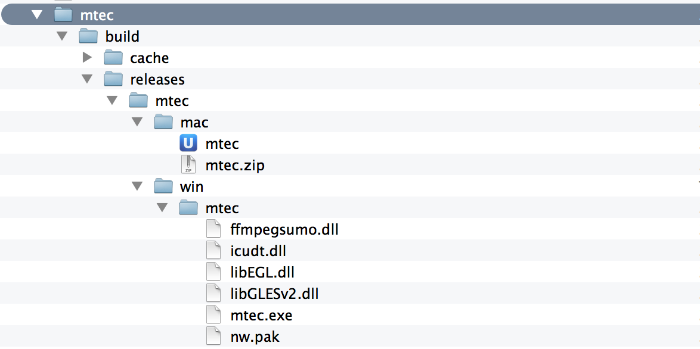

node-webkit
Desktop application development
with node+js / html / css

What we needed
Ustream embed player
- iframe
- supports several platforms
- live video playback with Flash/HTML5
- 60 million visits per month
Debug can be problematic
- desktop - dev console
- mobile:
- native remote debug
(osx safari, android sdk + chrome) - Adobe Edge Inspect
(weinre)
- native remote debug
All these are for developers
But usually, error reports are not from developers...
Debugging LIVE content
"When" and "Where" are also factors in debugging
Summary
- debug tool
- on every possible platform
- in house
- quick logging
- as much information in bugreports as possible
player > debug console
WebRTC
"Chrome/FF only" debug website,
to connect the clients
But mobile has no WebRTC yet :(
WebSocket
WebSocket server on the desktop
- not in browsers
- maybe a custom NPAPI plugin for Chrome...
Alternatives

easy start,
good tools,
has desktop build
no WebSocket server module
AS3 SocketServer
over JS API
WebSocket protocol has to be implemented by you,
complicated build
“The ws module works fine, can't we just put that behind some frontend, and we're done?”
node-webkit
web application runtime
chromium + nodejs
Developed and maintained by Intel
Features
Chrome HTML5
GPU acceleration
video/audio
Sandbox
Chromium security sandbox "downgrade"
file operations,
cross-origin requests
Node
Node symbols are injected into the
window context right after DOM init
Node stays async, but in a browser
Configuration
package.json
node packages, deps + runtime config
assets (like CSS, JS libs, images):
referenced in HTML, loaded by Chromium
Run
nw C:\path\to\app\dir-with-package-json
nw /path/to/app/dir-with-package-json
open -n -a node-webkit "/path/to/app/dir-with-package-json"
Build
Zip the application folder,
.zip ➔ .nw
Attach nw runtime and done!
Fully distributable app
Automated build:
grunt-node-webkit-builder
Build
Be aware!
It does not:
- protect
- obfuscate
- digitally sign
- secure
Demo time!
Odd couples
grunt-node-webkit-builder
mteconsole: {
options : {
version: "0.8.1", // node-webkit version to build with
mac_icns: "../mtec/icons/mtec.icns",
build_dir: '../mtec/build',
mac: true,
win: true,
linux32: false,
linux64: false
},
src: ['../mtec/src/**/*']
}
grunt-node-webkit-builder
GitHub
https://github.com/rogerwang/node-webkitQ&A
Thank you